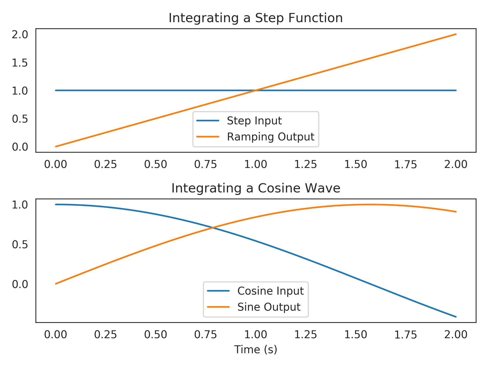
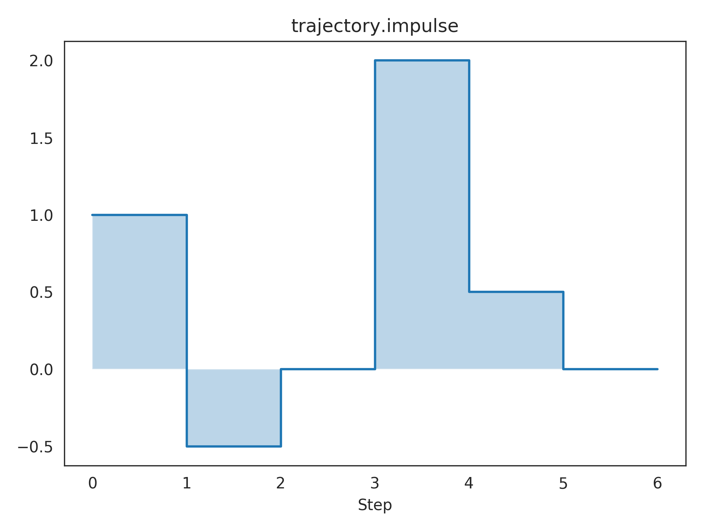

nengolib.signal.LinearSystem¶
-
signal.s= LinearSystem(sys=([1, 0], [1]), analog=True)¶
-
signal.z= LinearSystem(sys=([1, 0], [1]), analog=False)¶
-
class
nengolib.signal.LinearSystem(sys, analog=None)[source]¶ Generic linear system representation.
This extends
nengo.LinearFilterto unify a variety of representations (transfer function, state-space, zero-pole gain) in continuous (i.e., analog) and discrete (i.e., digital) time-domains. Instances provide access to a number of common attributes and methods that are core to a variety of routines and networks throughout nengolib.This can be used anywhere a
nengo.synapses.Synapse(ornengo.LinearFilter) object is expected within Nengo. For instance, this can be passed as asynapseparameter tonengo.Connection. If the system is analog, then it will be automatically discretized using the simulation time-step (seecont2discrete()). We advocate for using this class to represent and manipulate linear systems whenever possible (e.g., to create synapse objects, and to specify dynamical systems, whenever modelling within the NEF).The objects
sandzare instances ofLinearSystemthat form the basic building blocks for analog or digital systems respectively (see examples). These objects respect the usual interpretation of differentiation and time-shifting in the Laplace– andz–domains respectively.Parameters: - sys :
linear_system_like Linear system representation.
- analog :
boolean, optional Continuous or discrete time-domain. Defaults to
sys.analogifisinstance(sys,nengo.LinearFilter), otherwiseTrue. If specified, it must not contradictsys.analog.
See also
s,z,LinearNetwork,ss2sim(),synapsesNotes
Instances of this class are intended to be immutable.
Currently, support is focused primarily on SISO systems. There is some limited support for SIMO, MISO, and MIMO systems within state-space representations, but the functionality of such systems is currently experimental / limited as they must remain in state-space form.
State-space representations must be causal (proper) and finite. Transfer functions must also be finite (Padé approximants may help here) but may be acausal (not necessarily proper) and must remain SISO.
Conversions between representations are cached within the object itself. Redundantly casting a
LinearSystemto itself returns the same underlying object, in order to persist this cache whenever possible. This is done not as a performance measure, but to guard against numerical issues that would result from accidentally converting back and forth between the same formats.Examples
A simple continuous-time integrator:
>>> from nengolib.signal import s >>> integrator = 1/s >>> assert integrator == ~s == s**(-1) >>> t = integrator.trange(2.) >>> step = np.ones_like(t) >>> cosine = np.cos(t)
>>> import matplotlib.pyplot as plt >>> plt.subplot(211) >>> plt.title("Integrating a Step Function") >>> plt.plot(t, step, label="Step Input") >>> plt.plot(t, integrator.filt(step), label="Ramping Output") >>> plt.legend(loc='lower center') >>> plt.subplot(212) >>> plt.title("Integrating a Cosine Wave") >>> plt.plot(t, cosine, label="Cosine Input") >>> plt.plot(t, integrator.filt(cosine), label="Sine Output") >>> plt.xlabel("Time (s)") >>> plt.legend(loc='lower center') >>> plt.show()
Building up higher-order continuous systems:
>>> sys1 = 1000/(s**2 + 2*s + 1000) # Bandpass filtering >>> sys2 = 500/(s**2 + s + 500) # Bandpass filtering >>> sys3 = .5*sys1 + .5*sys2 # Mixture of two bandpass >>> assert len(sys1) == 2 # sys1.order_den >>> assert len(sys2) == 2 # sys2.order_den >>> assert len(sys3) == 4 # sys3.order_den
>>> plt.subplot(311) >>> plt.title("sys1.impulse") >>> plt.plot(t, sys1.impulse(len(t)), label="sys1") >>> plt.subplot(312) >>> plt.title("sys2.impulse") >>> plt.plot(t, sys2.impulse(len(t)), label="sys2") >>> plt.subplot(313) >>> plt.title("sys3.impulse") >>> plt.plot(t, sys3.impulse(len(t)), label="sys3") >>> plt.xlabel("Time (s)") >>> plt.show()
Plotting a linear transformation of the state-space from sys3.impulse:
>>> from nengolib.signal import balance >>> plt.title("balance(sys3).X.impulse") >>> plt.plot(t, balance(sys3).X.impulse(len(t))) >>> plt.xlabel("Time (s)") >>> plt.show()
A discrete trajectory:
>>> from nengolib.signal import z >>> trajectory = 1 - .5/z + 2/z**3 + .5/z**4 >>> t = np.arange(7) >>> y = trajectory.impulse(len(t))
>>> plt.title("trajectory.impulse") >>> plt.step(t, y, where='post') >>> plt.fill_between(t, np.zeros_like(y), y, step='post', alpha=.3) >>> plt.xticks(t) >>> plt.xlabel("Step") >>> plt.show()
Attributes: AA matrix from state-space representation.
BB matrix from state-space representation.
CC matrix from state-space representation.
DD matrix from state-space representation.
XReturns the multiple-output system for the state-space vector.
analogBoolean indicating whether system is analog or digital.
causalBoolean indicating if the system is causal / proper.
controllableReturns a new system in controllable canonical form.
dcgainSteady-state response to unit step input.
- default_size_in
A parameter where the value is an integer.
- default_size_out
A parameter where the value is an integer.
denDenominator of transfer function.
gainGain from zero-pole gain representation.
has_passthroughBoolean indicating if the system has a passthrough.
is_SISOBoolean indicating whether system is SISO.
is_ssBoolean indicating whether state-space has been computed.
is_stableBoolean indicating if system is exponentially stable.
is_tfBoolean indicating whether transfer function has been computed.
is_zpkBoolean indicating whether zero-pole gain has been computed.
numNumerator of transfer function.
observableReturns a new system in observable canonical form.
order_denOrder of transfer function’s denominator (i.e., state dimension).
order_numOrder of transfer function’s numerator.
polesPoles from zero-pole gain representation.
- seed
shapeShort-hand for
(.size_in, .size_out).size_inInput dimensionality (this equals 1 for SISO or SIMO).
size_outOutput dimensionality (this equals 1 for SISO or MISO).
ssState-space representation
(A, B, C, D).strictly_properBoolean indicating if the system is strictly proper.
tfTransfer function representation
(num, den).zerosZeros from zero-pole gain representation.
zpkZero-pole gain representation
(zeros, poles, gain).
Methods
General(num, den, output[, y0])An LTI step function for any given transfer function. NoDen(num, den, output)An LTI step function for transfer functions with no denominator. Simple(num, den, output[, y0])An LTI step function for transfer functions with one num and den. Step(num, den, output)Abstract base class for LTI filtering step functions. __call__(s)Evaluate the transfer function at the given complex value(s). apply(x[, d, dt, rng, copy])Run process on a given input. combine(obj)Combine in series with another LinearFilter. evaluate(frequencies)Evaluate the transfer function at the given frequencies. filt(u[, dt, axis, y0, copy, filtfilt])Filter the input using this linear system. filtfilt(x, **kwargs)Zero-phase filtering of xusing this filter.get_rng(rng)Get a properly seeded independent RNG for the process step. impulse(length[, dt])Impulse response with lengthtimesteps and widthdt.make_step(shape_in, shape_out, dt, rng[, …])Produces the function for filtering across one time-step. ntrange(n_steps[, dt])Create time points corresponding to a given number of steps. run(t[, d, dt, rng])Run process without input for given length of time. run_steps(n_steps[, d, dt, rng])Run process without input for given number of steps. trange(t[, dt])Create time points corresponding to a given length of time. transform(T[, Tinv])Changes basis of state-space matrices to T.Subset of magic methods
__len__()Dimensionality of state vector. __invert__()Reciprocal of transfer function. __neg__()__pow__(other)__add__(other)__sub__(other)__mul__(other)__div__(other)__eq__(other)- sys :